Дизайн и разработка сайта dataobjects.net
dataobjects.net
дата первого запуска:
29.10.2010
руководитель и разработчик:
Дмитрий Максимов
дизайнер и верстальщик:
Сергей Якунин
принимали активное участие:
Александр Якунин
Денис Крючков
Александр Устинов
рассказывает Сергей Якунин
Требовалось из
нескольких страниц
на сайте компании сделать отдельный сайт о продукте
и стать ближе к пользователям. После обсуждений был
создан репозиторий на Битбакете и несколько схем для
прояснения структуры будущего сайта.
 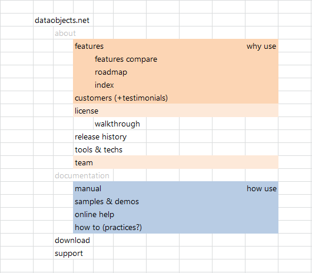
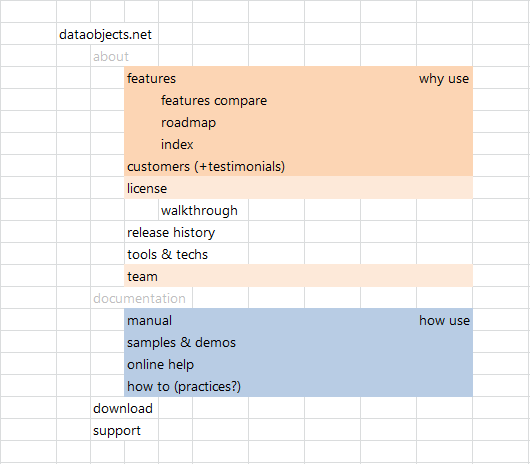
Основные макеты
главной страницы
я делал без набросков, cразу в Индизайне,
в течение двух недель. Некоторое время менялся логотип. Был
даже такой макет. Индизайн, Фотошоп, Иллюстратор, опять Индизайн... Основные
фазы эволюции главной странички:
{kind=link}
 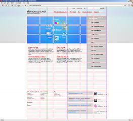
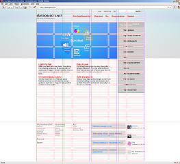

 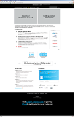
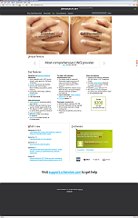
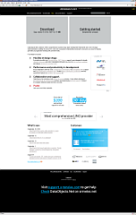
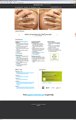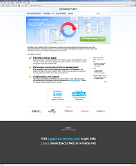 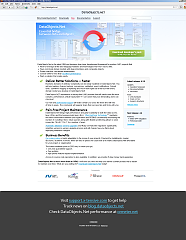 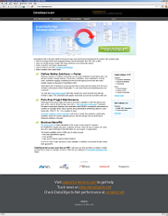
 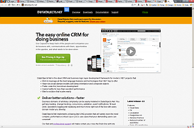
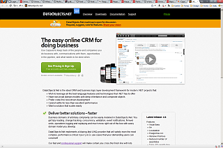

Подходящие варианты макетов были сверстаны в ХТМЛ, с использованием ASP.NET-мастерпэйджей и контролов. Понадобились Дримвивер, Вижуал Студия, Меркуриал и Фаербаг. После были внесены много второстепенных изменений — годный футер, фэйсбучный лайк, ленты новостей и многое другое.
Краткая эволюция внутренних страниц:


 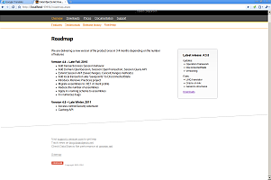
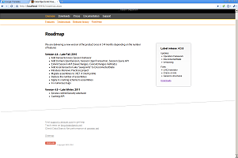

В итоге, все равно, сделали по-другому.
Через месяц-два после запуска я сделал скин для
микросайта документации.

Для
раздела техподдержки
решили использовать Оску — заменили неудобный Пхпбб-форум. Сделали скин,
близкий к Стэковерфлоу.
Блог хостится
на блоггере — пришлось cделать скин и для
него.


Были сделаны несколько баннеров (в том числе для рекламной
кампании в Адвордс), заставок для установщика, серия иконки
и прочие мелочи. В том числе, мне пришлось дописывать
скрипты для Гугль Аналитикс, чтобы анализировать поведение
пользователей, гуляющих по нескольким доменам.

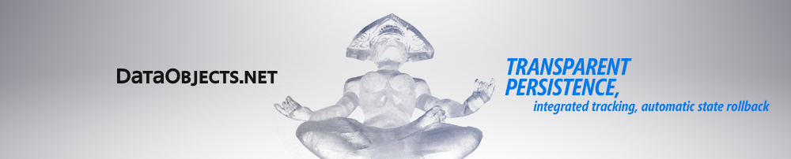

 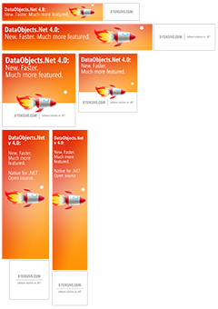
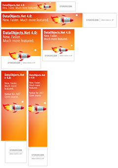
В репозитории 161 ревизия и файлов на 42 МБ. Статистика по
дизайнерским исходниками (без репозитория):
Красота!